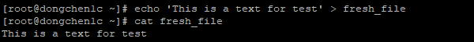
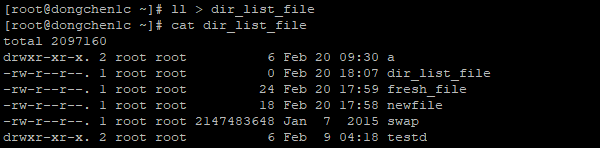
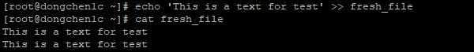
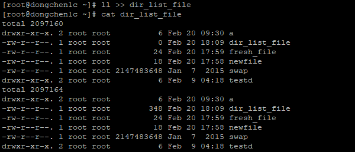
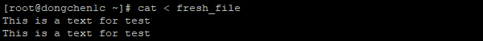
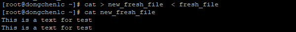
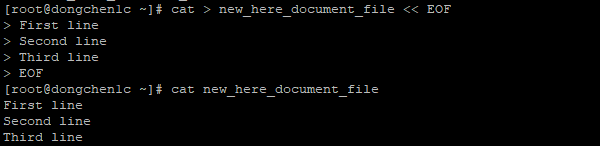
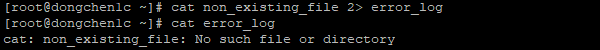
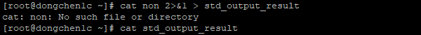
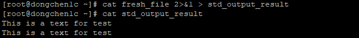

With the IO redirection feature, we can easily manipulate the input and output of files or other information.
Standard Output
The standard output stream is usually used to print the output of a program to a file, its file descriptor is 1.
Output Text to a File
1
2
echo 'This is a text for test' > fresh_file
cat fresh_file

Output text to fresh_file
Output Result to a File
1
2
ll -a > dir_list_file
cat dir_list_file

Output result to dir_list_file
Append Text to a File
1
2
echo 'This is a text for test' >> fresh_file
cat fresh_file

Append text to fresh_file
Append Result to a File
1
2
ll -a >> dir_list_file
cat dir_list_file

Append result to dir_list_file
Standard input streams are usually used to print the contents of a file to a screen, its file descriptor is 0.
Read Text from a File

Read text from fresh_file
Copy Text from a File to Another File
1
cat > new_fresh_file < fresh_file

Copy text from fresh_file to new_fresh_file
Multi-line Text to a File Using Here Documents
1
2
3
4
5
6
cat > new_here_document_file << EOF
First line
Second line
Third line
EOF
cat new_here_document_file

Input here documents to new_here_document_file
Standard Error
Standard error streams are typically used to print error content from the output of a program to a file, its file descriptor is 2.
Redirects Error Messages to a File
1
2
cat non_existing_file 2 > error_log
cat error_log

Redirects error messages to error_log file
Standard error streams are typically used to print error content from the output of a program to a file, its file descriptor is 2.
Suppress the Error Messages
1
cat non_existing_file 2 > /dev/null
Redirects error messages to /dev/null
Standard error streams are typically used to print error content from the output of a program to a file, its file descriptor is 2.
Show Error Messages and Output Standard Results to a File
1
2
cat non 2 >& 1 > std_output_result # file "non" not found
cat std_output_result # no standard output

Show error messages on screen and output standard results to a file
1
2
cat fresh_file 2 >& 1 > std_output_result # file fresh_file found
cat std_output_result # no standard error

Show error messages on screen and output standard results to a file
References
3.6 Redirections
If you think the content of this article has helped you, and if you would like some more high-quality materials in the near future, please give me some modest support.
Buy me a coffee